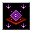

呪文の減衰 Diminish Spells
英語版 CrawlWiki の記事「Diminish Spells」(0.34 向け、2026-05-25 版)の翻訳です。原文の著者は編集履歴をご覧ください。
|  呪文の減衰 | |
|---|---|
| 詠唱の騒音 | 3 |
| 呪文の騒音 | 4 |
| 射程 | 視界(LOS) |
| フラグ | 方向・対象指定(Dir or target)、モンスター専用(Monster)、射線の確認が必要(Needs tracer) |

| 抵抗できない力で、敵の呪文の威力を一定時間弱める。 |
呪文の減衰はモンスター専用の呪文だ。対象に呪文弱化の状態異常をかけ、しばらくのあいだ呪文の威力を下げる。
呪文の減衰を唱える敵は次のとおり。

変更履歴
- 呪文の減衰は0.34でベス・ケムワルとともに追加された。